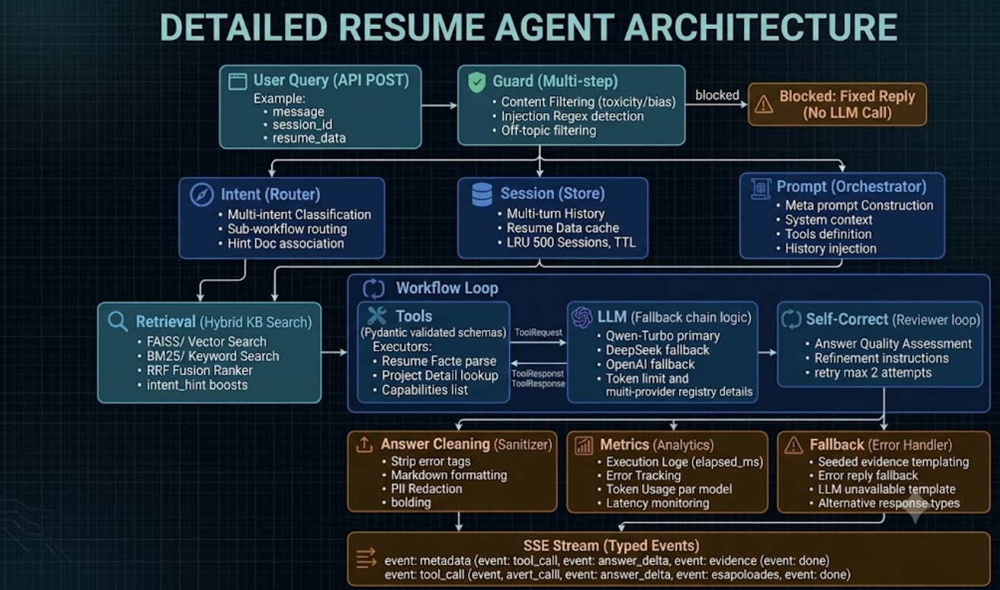

Architecture, not wrappers
Designed the agent loop: intent routing, tool dispatch, typed Streaming events, session state, provider fallback, and evidence grounding.
Senior AI Agent Engineer
Senior AI engineering is no longer just prompt craft. It is runtime architecture, tool orchestration, grounded retrieval, evaluation systems, latency discipline, and product ownership. My work spans live e-commerce agents at Zalando and enterprise data agents at Thoughtworks.
Role fit
Current AI Agent / AI Engineer roles evaluate production LLM systems, orchestration, grounding, evals, reliability, and senior ownership. This section maps those requirements to concrete work.
Senior capability map
The strongest signal is not a list of model APIs; it is how the runtime, retrieval, evaluation, product UX, and business constraints work together.
Proof of seniority
Designed the agent loop: intent routing, tool dispatch, typed Streaming events, session state, provider fallback, and evidence grounding.
Built 1,000+ Text2SQL cases, 800+ recommendation scenarios, retrieval metrics, and LLM-as-Judge checks.
Shipped improvements users and systems felt: -25% TTFT, -60% cold-start, -70% profile calls, and +20% Text2SQL accuracy.
Selected outcomes
Related experience
This site's backend
A multi-turn agent built to demonstrate the same patterns I use professionally: a typed event stream that separates tool calls from answer text, Pydantic-validated tool schemas, a four-stage workflow loop, and multi-provider LLM fallback.

How this backend is evaluated
Each resume fact is a node; shared skills are edges. An LLM reverse-engineers questions from the graph — single-hop and multi-hop — producing a labelled test set that drives retrieval eval, agent regression, and LLM-as-Judge scoring.
loading…
Contact
lu@resume boot --profile ai-engineer
Profile loaded: Zalando · Thoughtworks · Agent Runtime · Streaming · Text2SQL
lu@resume status
Ready. Ask naturally, or use commands like /projects.
Commands
Questions